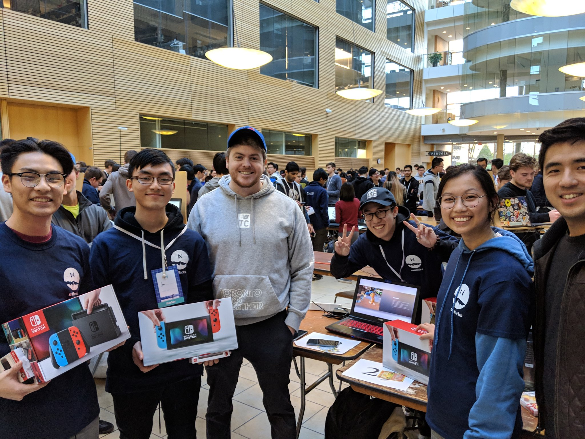

I Choose You!
Jan 27, 2019
Background
I Choose You! is a 24-hour hackathon project that allows Pokémon fans to live their childhood dreams of battling with their trading cards and shouting attack commands - Quick demo recorded by Keith from Standard Library.
What is "I Choose You!"?
Inspired by the popular video game Pokémon GO, I Choose You! is an immersive augmented reality mobile game that utilizes numerous technologies to bring forward its unique experience. Created at nwHacks 2019, the project was developed with the Unity Engine (for game engine, android packaging and models/textures), Vuforia AR engine (for augmented reality and image tracking), IBM Watson’s voice-to-text API (for speech recognition), and custom Stdlib REST APIs (to calculate battle logic). The project won the award: “Best/Most Creative Use of Standard Library,” presented by the sponsor Standard Library.
How it works
When the app is opened, audio is constantly being streamed to IBM Watson and processed, in which a call is then made to IBM Watson’s API. Given the voice commands recognized to text, scripts within Unity’s engine are run and call two custom REST APIs that we created and are hosted on Standard Library - one API for the “attacking” player and one for the “waiting” player.” These APIs allow us to calculate the battle logic based on attack types and move attack damage. Once processed, Unity’s game engine is triggered to display the attack animations of the respective Pokémon.
I personally handled the integration of Vuforia’s AR engine and image targetting features with Unity, programming the attack animation scripts in C#, and modeling the battle animations.